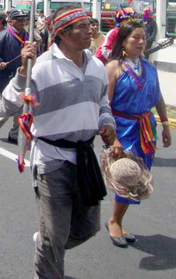

La cita oficial
Unas trescientas personas participaron de las mesas de la reunión oficial. Trataron una gama de temas: la interculturalidad, la lucha contra el racismo, el cambio climático, el comercio entre los pueblos, la responsabilidad de las multinacionales por daños causados al ambiente, el control de la explotación petrolero en la Amazonía y el reconocimiento de prácticas ancestrales.
En la inauguración, Ricardo Patiño, canciller del Ecuador, calificó la cita como una “respuesta altiva y soberana al neoliberalismo”. Añadió que hoy, más que nunca, se tiene que caminar por el sendero de la revolución que se está dando en los países latinoamericanos.
Por su parte, el canciller de Bolivia, David Chaquehuanca aplaudió la participación de los indígenas. “En el capitalismo primero está el interés por el capital; en el socialismo, por el hombre. Pero nosotros planteamos que el mayor interés tiene la naturaleza, en la que el hombre es un elemento más”.
Marcia Masaquiza, responsable de salud intercultural de Tungurhagua, expresó el deseo que lo que se trataba en la cumbre no quedara sólo en papel. Para llegar a la construcción del Sumak Kawsay todavía falta cambiar de actitud, dijo.
Finalmente, Alexandra Ocles, ministra de la Secretaría de los Pueblos del Ecuador, dijo que esta cumbre podría marcar la diferencia en la integración y fortalecimiento y las capacidades de los diferentes pueblos.
Participación de los “no invitados”

Entre los no invitados estaban cientos de indígenas de la Amazonía, quienes desde las calles se hicieron escuchar. En la marcha también participaron indígenas, afros descendientes y mestizos de la Costa y la Sierra. Un grupo de inteños no se podían perder esta marcha puesto que en Íntag están siendo violados los derechos de la Naturaleza.
Antes de que llegaran los mandatarios de Venezuela y Bolivia y el anfitrión Rafael Correa, en las calles unas tres mil personas protestaba para que sus derechos se respeten. Justo para proteger a las delegaciones oficiales de los manifestantes, las instalaciones de la cumbre fueron custodiadas por uno 650 efectivos de las Fuerzas Armadas y 895 de la Policía con un tanque anti motines. Los 1500 uniformados no pudieron detener la llegada de los indígenas hasta la puerta de entrada al coliseo. Ahí, se escuchaban consignas: “No hay trabajo, no hay maíz, sólo ratas de Alianza País”; “Evo, hermano Correa te serrucha”, “Correa, falso socialista” y “Oso, oso, oso, Correa mentiroso”.
Delfín Tenesaca, presidente de la ECUARRUNARI, dijo que su organización tampoco fue invitada. Afirmó que las demandas de los pueblo indígena son justas: “Desde hoy en adelante, no habrá más discriminación racial, ni insultos del presidente Correa; tendrá que respetar a los pueblos y nacionalidades indígenas”. El pedido de los no invitados era que el presidente Evo Morales saliera de la reunión para entregarle una propuesta para que fuese discutida en la reunión del ALBA. El presidente Morales, por medio de su canciller Chaquehunca, se disculpó diciendo que no podía salir porque estaba en una reunión importante en una de las mesas pero que en una media hora saldría para escuchar las peticiones de los manifestantes. Además, el señor Tenesaca, rechazó las declaraciones de Hugo Chávez, quien acusó a los indígenas no invitados de ser una corriente ideológica opuesta a la de Alianza País, financiada por la CIA.
Marlon Santi, presidente de la Confederación de Nacionalidades Indígenas del Ecuador (CONAIE), declaró que él y sus compañeros dirigentes tampoco fueron invitados a la cumbre.
En el Ecuador el tema de racismo y la plurinacionalidad no son transversales. Se hicieron presentes, dijo, porque la Cumbre del ALBA sin los pueblos originarios no podía continuar. Acusó a los gobernantes de no querer recibir la declaración de los indígenas. “Que el mundo sepa, que el Ecuador sepa que estamos haciendo procesos democráticos”, afirmó. El dirigente indígena concluyó con un rechazo al Rafael Correa y lo hizo responsable de lo que ocurra con los derechos indígenas.
Un miembro del pueblo Shuar, en una entrevista con el Periódico INTAG, dijo que estaba protestando por sus derechos, que a causa de la explotación petrolera, maderera y minera, las empresas están contaminando el agua. “Queremos que sea un país libre. Y con un ambiente sano, ese derecho es lo que reclamamos”. Indicó que el Presidente debe consultar al pueblo porque él no está puesto sólo por los ricos sino por todos los pueblos del Ecuador. En la actualidad, el sumak kawsay no es más que palabras, no existe en la práctica, finalizó el entrevistado.
Salvador Qhispe, prefecto de Zamora Chinchipe, en una entrevista con este medio, dijo que espera que el proyecto del ALBA alternativo sea una realidad, más no sólo un discurso: En el discurso se escucha cosa muy lindas. “Que hay un país plurinacional. Que hay un país intercultural. Que hay una revolución ciudadana. Que hay la participación ciudadana. Y que la patria ya es de todos. Todo sólo palabras. En la práctica no hay ninguna participación”, aseguró el prefecto. En el país lo que existe es una imposición, afirmó, y dio el ejemplo de la Ley de Minería en cuya elaboración las propuestas del pueblo no fueron acogidas en absoluto. La actitud de este Gobierno es un camuflaje, insistió. Es igual o peor que los anteriores Gobiernos. Los otros por lo menos eran abiertamente de derecha. En sus discursos, Rafael Correa se hace ver como de izquierda, pero en la práctica representa a la nueva derecha ecuatoriana, dijo el prefecto. Aseguró que defiende a las multinacionales y señaló como ejemplo la telefónica Porta que pagó 480 millones de dólares por un contrato de 15 años. Estas empresas están agradecidas porque ganarán millones de dólares. A las personas que reclaman estas injusticias, el Presidente las tilda de ecologistas infantiles. Por todo esto, dijo el prefecto, estaba en las calles reclamando por un verdadero Estado plurinacional. También afirmó que de su tierra eran de llegar miles de indígenas pero la policía no les dio el salva conducto que necesitaban para que los buses salieran de la provincia. Con respecto a los indígenas que estaban en la reunión del ALBA, el señor Qhispe dijo que han de estar hablando a título personal o de acuerdo a su circunscripción territorial. Los verdaderos dirigentes no fueron tomados en cuenta para esta reunión, concluyó el prefecto de Zamora Chinchipe.
Indios manipulados por todo el mundo, según Correa
En la clausura de la X Cumbre del ALBA el 25 de junio, el presidente Correa aseguró que “hay conspiraciones en marcha” contra su Gobierno, lideradas por organizaciones indígenas. Anunció que próximamente presentará las pruebas pertinentes al país. En sus declaraciones no precisó quienes están detrás de estas acciones. Sin embargo, lamentó lo ocurrido al inicio de la segunda jornada de la Cumbre, cuando unas tres mil personas con sus dirigentes protestaban por sus derechos e intentaban ingresar al recinto. El mandatario afirmó: “La violencia no es el camino, compañeros, y cuidado: esto es parte del plan para desestabilizar al Gobierno”. Aseveró que muchas organizaciones indígenas están siendo utilizadas por “grupos oligárquicos” de la derecha que siempre se han mostrado contrarios a sus políticas económicas y sociales: “Miren a los extremos que han caído ciertos dirigentes indígenas: pactar, amarrar, conversar con la más extrema, recalcitrante, cavernícola derecha que tiene este país”. También criticó al movimiento indígena por oponerse a la extracción de petróleo y minerales en sus territorios y los acusó de caer en “fundamentalismos ecologistas”. Repitió las consabidas frases sobre la importancia de explotar estos recursos a fin de que el país se desarrolle y que no se puede estar sentados en un saco de oro y muriéndose de la pobreza. Asimismo, les acusó a los indígenas de haberse dejado influenciar por “gringuitos”.

Los mandatarios cerraron la cumbre del ALBA lanzando consignas sobre el reconocimiento a las culturas nativas y la explotación de recursos naturales para el “desarrollo”. La declaración final, firmada por los presidentes tras un grito de “hasta la victoria siempre” lanzado por Correa, ratificó un texto de la ONU sobre los derechos de los pueblos indígenas y con un compromiso contra el racismo y a favor de una sociedad que proteja a la Madre Tierra.